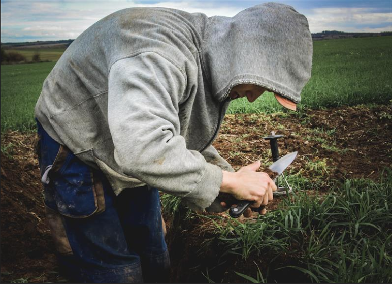
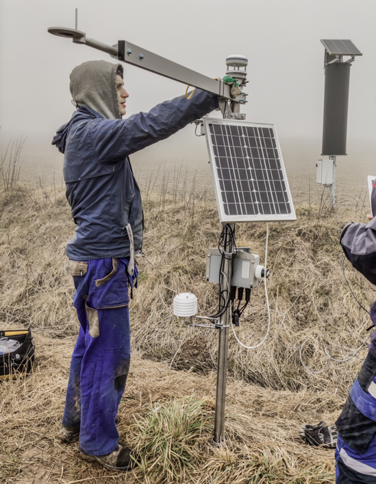
Ing. Jakub Jeřábek, Ph.D.
Research fellow at CTU in Prague.
jakub.jerabek@fsv.cvut.cz
External links:
Table of Contents
Study sites
Setup of an artificial rainfall experiment for studying runoff formation
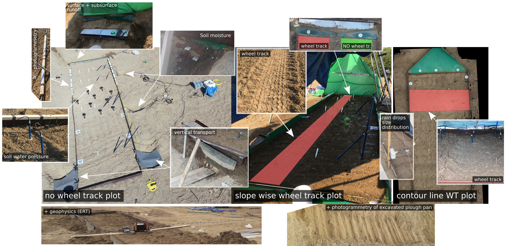
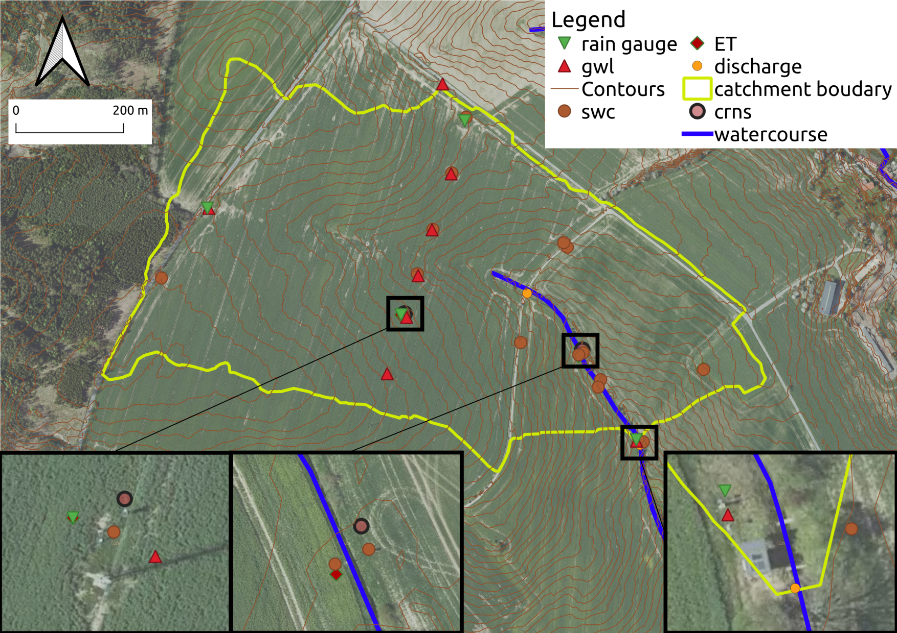
Runoff at cultivated soils
Electrical resistivity tomography
Excavated soil pit compared to ERT transect
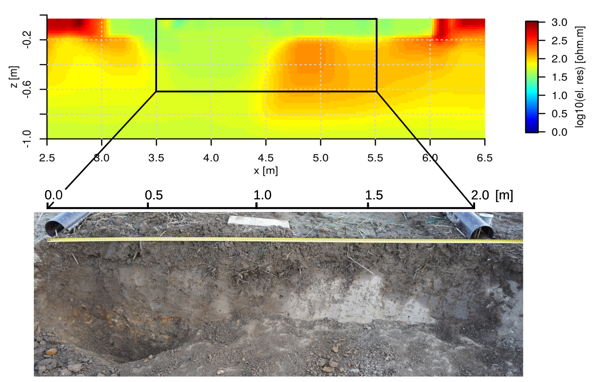
Variogram of ERT trasect (spatial semivariance decrease with depth)
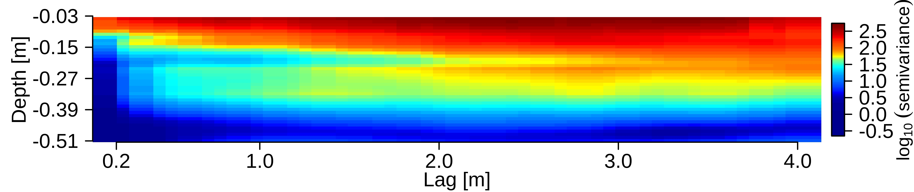
SMODERP2D model
Few time steps of Nučice catchment model
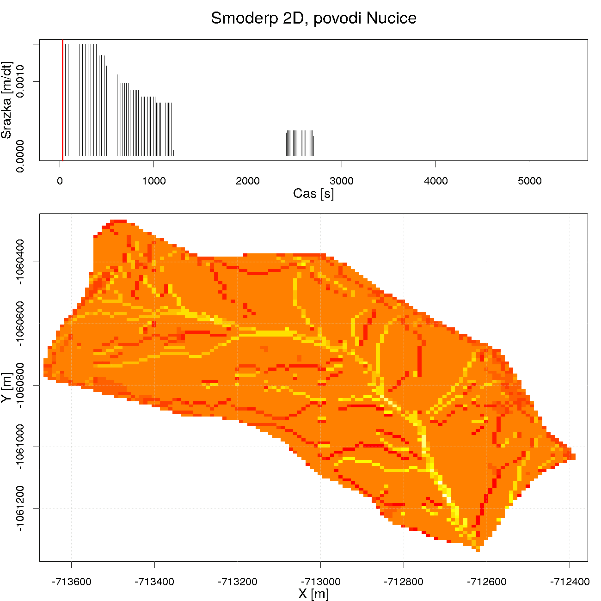
Optimized model parameter plotted with texture classes and soil fraction
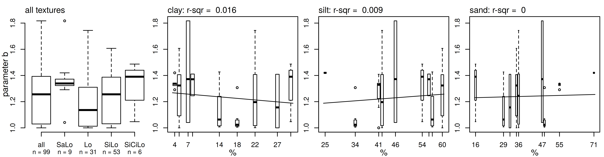
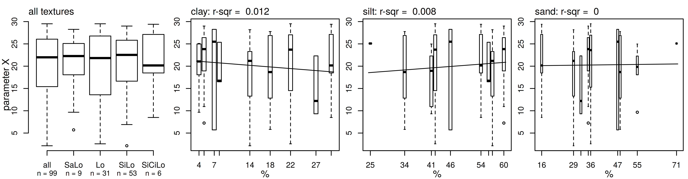
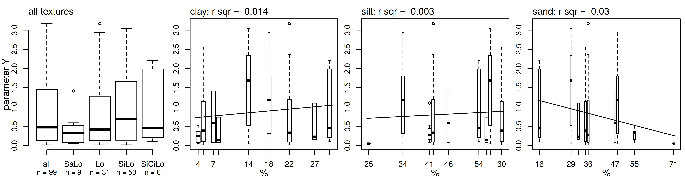
Observed and modeled (optimized) data
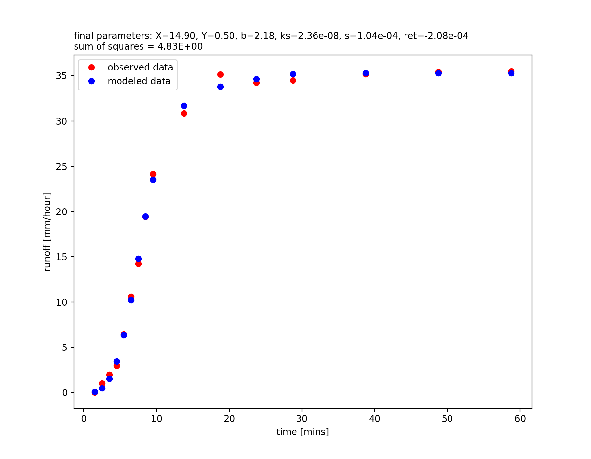